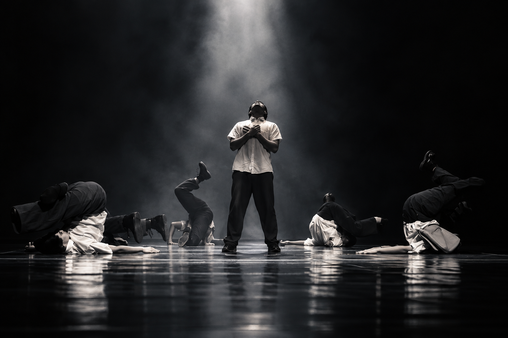
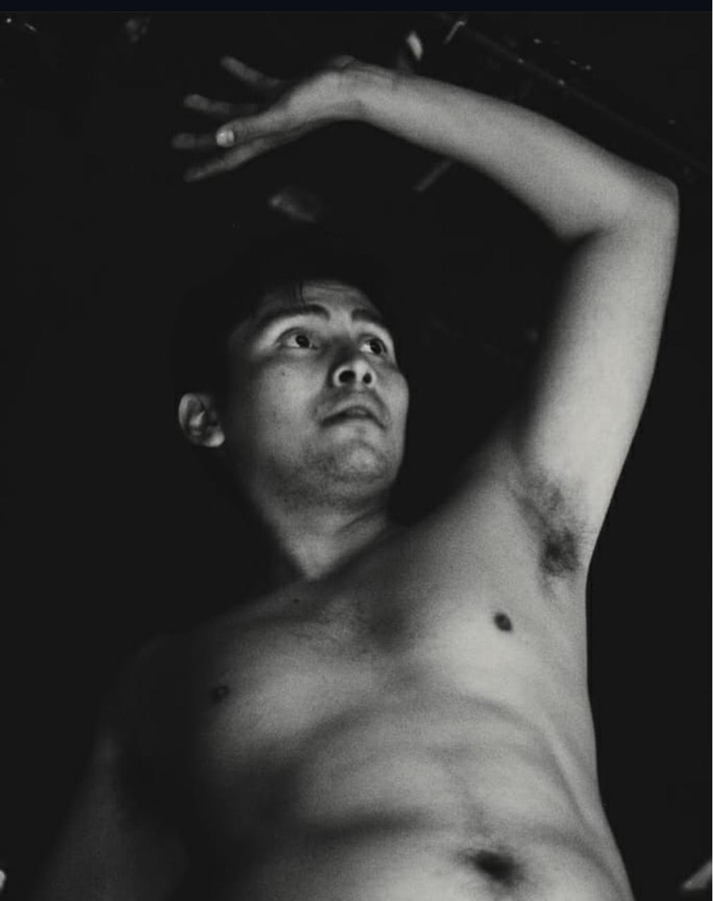

JD STUDIOS / ARCHIVO
La presencia
deja huella.
Un gesto. Una mirada. Un instante.
El cuerpo también escribe imágenes. Este es el registro vivo de nuestros procesos, obras y encuentros.
01 / FOTOS
Imágenes
en movimiento.




02 / VIDEOS
Registro
audiovisual.
EL ARCHIVO SIGUE CRECIENDO
Cada proceso
suma una imagen.
Este archivo se irá ampliando con nuevos registros de nuestras obras y encuentros.
Contarnos una idea ↗